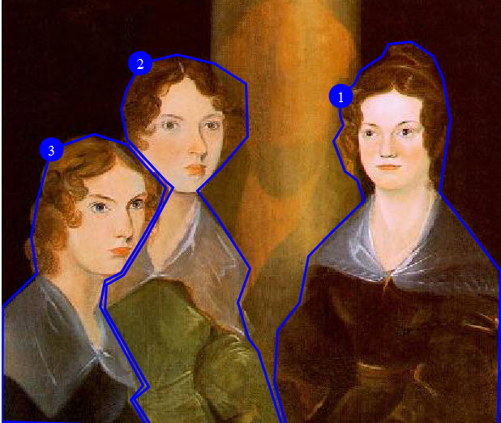

Accessibility
Accessibility
DITA has markup and features that enable producing output that is accessible by all audiences.
Handling accessibility in content and in processors
Accessibility requirements vary depending on how content is rendered. Making content accessible is work that involves both content authors and the processors that render DITA content.
The foundation for accessible content is the Web Content Accessibility Guidelines (WCAG) from W3C. While content formats and content authors might have unique or additional accessibility needs, the rules outlined in the WCAG provide a reference point for considering how to create accessible content in DITA.
The guidelines fall into several categories:
- General content guidelines
-
Many accessibility guidelines and best practices apply to all content. Such guidelines are generally outside the scope of this specification.
For example, a guideline might recommend against multiple levels of nested unordered lists, because such lists are difficult to navigate with a screen reader. As a general content standard, DITA cannot prohibit such nesting. However, implementations can prevent such nesting through business processes or rule-based processing such as Schematron.
Another common accessibility recommendation is to avoid flashing or flickering video content. The DITA
<video>element is a general mechanism for including video, and the content of that video is outside the scope of this specification. - Markup guidelines
-
Other accessibility guidelines require the use of specific DITA markup. Such guidelines are addressed in this specification.
For example, a requirement that images specify alternate text requires the use of the
<alt>element within the<image>element. However, a guideline that the alternate text be meaningful is not something that can be enforced by DITA markup. - Guidelines that require enablement by DITA processors
-
Some accessibility guidelines require processors to take advantage of specific DITA markup.
Authors can use specific markup to enable accessible output. For example, by specifying a header row in a table, an author can define a header for every cell in the table body. However, to make the relationship between the table cell and header cell specific in a rendered format like HTML, the processor must make those relationships explicit in the output.
- Processor requirements outside the scope of DITA markup
- Processors have many other accessibility concerns that are
outside the scope of this specification.
For example, WCAG has a requirement for contrast ratios when rendering substantive content. That requirement is unrelated to the source content. Such requirements apply to rendering mechanisms such as the CSS that is used to style DITA content in a browser.
As another example, a DITA processor might generate automated headings or include characters in output, such as:
- A section heading for an element specialized from
<section>, such as Requirements for the<prereq>element in a task topic - The greater-than character (>) that is typically used between phrases that are part of a menu navigation
It is up to the processor to use correct rendering for these cases, such as heading markup and accessible text alternatives for character displays such as the menu separator.
- A section heading for an element specialized from
Accessible content
DITA provides elements and attributes that are designed to make content accessible.
Many common types of content are not accessible to all readers. For example, an image cannot be rendered by a screen reader, and a video cannot be rendered in many formats. DITA includes markup features that are designed to convey alternate versions of such content.
- Alternate text for images
-
Alternate text is a textual description of an image. Systems often render the alternate text when the reader is using assistive technology or the image cannot be rendered.
The
<alt>element is available inside of images as a way to specify alternate text. - Alternate text for areas of image maps
-
Within an image map, each defined area of the image can specify a cross reference. Whether or not the cross reference actually specifies a URI reference, the text within that cross reference functions as alternate or hover text.
- Long descriptions for media
-
A long description reference is a reference to a textual description of a graphic or object. This is typically used to provide an extended description when the graphic or object is too complicated to describe with alternate text.
Processors can handle the reference in the following ways:
- Render the graphic or object as a link
- Make the extended description available to accessibility tools such as screen readers
While DITA provides the markup to enable these accessibility
features, it is up to DITA processors to render output that uses
the markup properly. For example, when a processor generates HTML5,
alternate text must be specified using the @alt
attribute on the <img> element.
Accessible tables
The complexity of table rendering requires authors and processors to be aware of several table-specific elements and attributes if they want to ensure that tables are accessible.
DITA topics support two types of tables: complex table and simple table.
The <table> element uses the OASIS
Exchange Table Model, a simplification of the
CALS table model. The complex table provides a wide
variety of controls over the display properties of the data and
even the table structure itself.
The <simpletable> element is structurally
less complex than the <table> element and so is an
easier base for specialization. It reflects a content model that
is close to the HTML table. The
<simpletable> element does not provide
much control over formatting, although it
permits titles and row and column
spanning.
The following list provides information about table features that
have an effect on table accessibility. Note that some features are
applicable only to the complex tables that are produced by the
<table> element.
- Captions
- Both table models allow for a caption to be provided by using
the
<title>element. - Cell headers
- When entries within a table function as headers, but do not
fall into the categories of column or row headers, the
@idand@headersattributes on table cells can be used to associate table cells with headers. Specifying the@idattribute on the cell that functions as a header, and setting the@headersattribute to that ID value on the table cell for which it acts as a header serves to relate table cells to headers. - Column headers
-
Column headers are created using a header row, where each cell in the header row provides a header for other cells in its column. Both table models provide support for column headers:
- Complex table
- The
<thead>element can provide one or more header rows. - Simple table
- The
<sthead>element can provide a single row header.
- Row headers
-
Row headers are created using a header column, where each cell in the header column provides a header for other cells in its row. Both table models provide support for row headers:
- Complex table
- (First column) The
@rowheaderattribute can be set to firstcol on the<table>element to indicate that the first column is a header. Alternatively, the@scopeattribute for each entry in the first column can be set to row to indicate that those cells are headers for their respective rows. - Simple table
- The
@keycolattribute can be set to the number of the column that functions as a header.
- Summaries
- (Complex table only) While the
@summaryattribute on tables is deprecated in HTML5, the<desc>element within a<table>can be used to store a summary. Since the content of the<desc>element is typically rendered as part of the content flow when used within<table>, processors might need special configuration to support this usage.
Examples of DITA markup for accessibility
This section is non-normative.
This section contains examples of how DITA markup facilitates accessibility.
Example: Alternate text for an image
This section is non-normative.
In this scenario, an image of a ticketing workflow also provides alternate text that describes the image.
The following code sample references an image and provides alternate text:
<image href="workflow.png">
<alt>A workflow diagram that shows a ticketing workflow.
The workflow states are described in the text.</alt>
</image>Example: Alternate text for an image map
This section is non-normative.
In this scenario, alternate text is provided for an image map.
The following image shows "The Brontë Sisters". This portrait is in the collection of the National Portrait Gallery, London. The images of the three Brontë sisters (Charlotte, Emily, and Ann) are linked to their Wikipedia pages.

The following code sample shows how the
<imagemap> element is used to generate the
above image map, as well as how alternate text can be provided to
ensure accessibility:
<imagemap id="bronte-sisters">
<image href="Bronte_Sisters.jpg" id="bronte-sisters">
<alt>Portrait of "The Brontë Sisters"</alt>
</image>
<!-- Area #1: Charlotte Brontë -->
<area>
<shape>poly</shape>
<coords>408, 345, 410, 223, 360, 158, 369, 98, 363, 65, 355, 46,
337, 34, 318, 36, 313, 46, 295, 58, 290, 69, 279, 79, 278, 95,
281, 103, 273, 116, 282, 141, 292, 148, 298, 165, 266, 196, 252,
211, 245, 249, 227, 272, 224, 315, 234, 350, 408, 349</coords>
<xref format="html" scope="external"
href="https://en.wikipedia.org/wiki/Charlotte_Bront%C3%AB">
Charlotte Brontë</xref>
</area>
<!-- Area #2: Emily Brontë -->
<area>
<shape>poly</shape>
<coords>228, 343, 211, 289, 203, 278, 194, 249, 204, 221, 177, 178,
161, 157, 180, 138, 202, 112, 201, 69, 175, 52, 144, 45, 114, 52,
102, 75, 98, 90, 103, 114, 118, 131, 135, 149, 141, 154, 118,
197, 100, 226, 86, 234, 85, 254, 121, 318, 109, 328, 123, 350,
230, 349</coords>
<xref format="html" scope="external"
href="https://en.wikipedia.org/wiki/Emily_Bront%C3%AB">
Emily Brontë</xref>
</area>
<!-- Area #3: Anne Brontë -->
<area>
<shape>poly</shape>
<coords>0, 347, 1, 252, 29, 225, 24, 195, 30, 161, 41, 123, 76,
110, 103, 119, 119, 137, 135, 154, 129, 172, 116, 195, 98, 224,
85, 231, 81, 252, 116, 317, 106, 329, 119, 350</coords>
<xref format="html" scope="external"
href="https://en.wikipedia.org/wiki/Anne_Bront%C3%AB">
Anne Brontë</xref>
</area>
</imagemap>The <alt> element provides alternate text for
the image as a whole, and the content of the
<xref> elements provide alternate text for
each of the linked regions.
The following image shows the areas that are defined by the image map:

The following table lists the link targets and alternate text for each of the defined areas:
| Area | Alternate text | Link target |
|---|---|---|
| 1 | Charlotte Brontë | Wikipedia entry for Charlotte Brontë |
| 2 | Emily Brontë | Wikipedia entry for Emily Brontë |
| 3 | Anne Brontë | Wikipeda entry for Anne Brontë |
Example: Fallback information for multimedia content
This section is non-normative.
In this scenario, fallback content is provided for systems that cannot display multimedia content.
The referenced video provides an image as fallback. If a system does not support video, it will display the image video-not-available.png, which specifies its own alternate text.
<video height="300px"
loop="false"
muted="false"
width="400px">
<desc>A video that illustrates how to conduct a system health scan.</desc>
<fallback>
<image href="video-not-available.png">
<alt>This video cannot be displayed.</alt>
</image>
</fallback>
<video-poster keyref="demo1-video-poster"
<media-source href="video.mp4" format="video/mp4"/>
</video>Example: Simple table with accessibility markup
This section is non-normative.
In this scenario, the topic author uses a header row and the
@keycol attribute to ensure that the table is
accessible
In the following code sample, the <sthead>
element identifies the header row, and @keycol
attribute identifies the header column:
<simpletable frame="all" relcolwidth="1* 1*" keycol="1">
<sthead>
<stentry>Type of room</stentry>
<stentry>Price per day</stentry>
</sthead>
<strow>
<stentry>Single bed</stentry>
<stentry>$125.00</stentry>
</strow>
<strow>
<stentry>Two double beds</stentry>
<stentry>$150.00</stentry>
</strow>
<strow>
<stentry>Queen or king bed</stentry>
<stentry>$165.00</stentry>
</strow>
</simpletable>This table might be rendered in the following way:
Example: Complex table with accessibility markup
This section is non-normative.
In the following code sample, the table uses the
<thead> element to identify header rows and
the @rowheader attribute to identify a header column.
These header relationships can be used to
automatically create renderings of the table in other formats, such
as HTML, that can be navigated using a screen reader or other
assistive technology.
<table frame="all" rowheader="firstcol">
<title>Sample of automated table accessibility</title>
<desc>Names are listed in the column c1. Points are listed in both data columns, with
expected points in column c2 and actual points in column c3.</desc>
<tgroup cols="3">
<colspec colname="c1"/>
<colspec colname="c2"/>
<colspec colname="c3"/>
<thead>
<row>
<entry morerows="1">Name</entry>
<entry namest="c2" nameend="c3">Points</entry>
</row>
<row>
<entry>Expected</entry>
<entry>Actual</entry>
</row>
</thead>
<tbody>
<row>
<entry>Mark</entry>
<entry>10,000</entry>
<entry>11,123.45</entry>
</row>
<row>
<entry>Peter</entry>
<entry>9,000</entry>
<entry>11,012.34</entry>
</row>
<row>
<entry>Cindy</entry>
<entry>10,000</entry>
<entry>10,987.64</entry>
</row>
</tbody>
</tgroup>
</table>In this code sample, navigation information for assistive technology is derived from two sources:
- The
<thead>element contains two rows, and indicates that each entry in those header rows is a header cell for that column. This means that each body cell can be associated with the header cell or cells above the column. For example, in the second body row, the entry "Peter" is associated with the header "Name"; similarly, the entry "9,000" is associated with the headers "Expected" and "Points". - The
@rowheaderattribute that is specified on<table>indicates that the first column plays a role as a row header. This means that the header cell in column one is associated with the other body cells in the same row. For example, in the second body row, the entry "9,000" is associated with the header "Peter".
As a result of these two sets of headers, a rendering of the table associates the entry "9,000" with three headers: "Peter", "Expected", and "Points", thus making it fully navigable by a screen reader or other assistive technology. When the user navigates to the cell containing "9,000", it can report the headers "Peter", "Expected", and "Points" as the headers for that cell.
The output might be rendered in the following way:
The rendered HTML used by a screen reader might look as follows.
<table>
<caption>
<span>Sample of automated table accessibility</span>
<span class="desc">Names are listed in the column c1. Points are listed in both data columns,
with expected points in column c2 and actual points in column c3.</span>
</caption>
<colgroup><col><col><col></colgroup>
<thead>
<tr>
<th id="source__entry__1" rowspan="2">Name</th>
<th id="source__entry__2" colspan="2">Points</th>
</tr>
<tr>
<th id="source__entry__3">Expected</th>
<th id="source__entry__4">Actual</th>
</tr>
</thead>
<tbody>
<tr>
<th scope="row" id="source__entry__5" headers="source__entry__1">Mark</th>
<td headers="source__entry__5 source__entry__2 source__entry__3">10,000</td>
<td headers="source__entry__5 source__entry__2 source__entry__4">11,123.45</td>
</tr>
<tr>
<th scope="row" id="source__entry__8" headers="source__entry__1">Peter</th>
<td headers="source__entry__8 source__entry__2 source__entry__3">9,000</td>
<td headers="source__entry__8 source__entry__2 source__entry__4">11,012.34</td>
</tr>
<tr>
<th scope="row" id="source__entry__11" headers="source__entry__1">Cindy</th>
<td headers="source__entry__11 source__entry__2 source__entry__3">10,000</td>
<td headers="source__entry__11 source__entry__2 source__entry__4">10,987.64</td>
</tr>
</tbody>
</table>Example: Complex table with some manually-specified accessibility markup
This section is non-normative.
In some complex tables, the <thead> element and
@rowheader attribute might not be enough to support all accessibility needs.
Assume that a table is designed so that names are listed across the top
row, instead of in the first column, with both the first and second columns also functioning
as headers:

Here, the @rowheader
attribute cannot be used, because it is only able to specify the
first column as a header column. In this case, the
@scope attribute can be used to indicate that
entries in the first and second columns function as headers for the
entire row (or row group, in the case of a cell that spans more than
one row).
The following code sample demonstrates the use of the
@scope attribute to facilitate navigation of these
rows by a screen reader or other assistive technology. Note that the <thead>
element is still used to imply a header relationship with the names
at the top of each column.
<table frame="all">
<title>Sample with two header columns</title>
<tgroup cols="5">
<colspec colname="c1"/>
<colspec colname="c2"/>
<colspec colname="c3"/>
<colspec colname="c4"/>
<colspec colname="c5"/>
<thead>
<row>
<entry namest="c1" nameend="c2">Name</entry>
<entry>Mark</entry>
<entry>Peter</entry>
<entry>Cindy</entry>
</row>
</thead>
<tbody>
<row>
<entry morerows="1" scope="rowgroup"><b>Points</b></entry>
<entry scope="row"><b>Expected</b></entry>
<entry>10,000</entry>
<entry>9,000</entry>
<entry>10,000</entry>
</row>
<row>
<entry scope="row"><b>Actual</b></entry>
<entry>11,123.45</entry>
<entry>11,012.34</entry>
<entry>10,987.64</entry>
</row>
</tbody>
</tgroup>
</table>The rendered HTML used by a screen reader might look as follows.
<table>
<caption>Sample with two header columns</caption>
<colgroup><col><col><col><col><col></colgroup>
<thead>
<tr>
<th id="source__entry__1" colspan="2">Name</th>
<th id="source__entry__2">Mark</th>
<th id="source__entry__3">Peter</th>
<th id="source__entry__4">Cindy</th>
</tr>
</thead>
<tbody>
<tr>
<th headers="source__entry__1" rowspan="2" scope="rowgroup"><strong class="ph b">Points</strong></th>
<th headers="source__entry__1" scope="row"><strong class="ph b">Expected</strong></th>
<td headers="source__entry__2">10,000</td>
<td headers="source__entry__3">9,000</td>
<td headers="source__entry__4">10,000</td>
</tr>
<tr>
<th headers="source__entry__1" scope="row"><strong class="ph b">Actual</strong></th>
<td headers="source__entry__2">11,123.45</td>
<td headers="source__entry__3">11,012.34</td>
<td headers="source__entry__4">10,987.64</td>
</tr>
</tbody>
</table>Example: Complex table with manual accessibility markup
This section is non-normative.
In extremely complex tables, such as those with a single header cell in the middle of the
table, fine-grained accessibility controls are available to explicitly associate any content
cell with any header cell. This might also be useful for cases where processors do not support
implied accessibility relationships that exist based on header markup such
as <thead>.
In the following sample, header cells are identified using the
@id attribute, which is referenced using the
@headers attribute on appropriate content cells.
This makes all header relationships in the table explicit. Note that
this sample ignores the @scope attribute, which could
be used to exercise manual control without setting as many attribute
values; it also ignores the fact that <thead>
creates a header relationship even when the @id and
@headers attributes are not used.
<table frame="all">
<title>Sample with fully manual accessibility control</title>
<desc>Names are listed in the column c1. Points are listed in both data columns, with
expected points in column c2 and actual points in column c3.</desc>
<tgroup cols="3">
<colspec colname="c1"/>
<colspec colname="c2"/>
<colspec colname="c3"/>
<thead>
<row>
<entry morerows="1"> </entry>
<entry namest="c2" nameend="c3" id="pts">Points</entry>
</row>
<row>
<entry id="exp" headers="pts">Expected</entry>
<entry id="act" headers="pts">Actual</entry>
</row>
</thead>
<tbody>
<row>
<entry id="name1">Mark</entry>
<entry headers="name1 exp pts">10,000</entry>
<entry headers="name1 act pts">11,123.45</entry>
</row>
<row>
<entry id="name2">Peter</entry>
<entry headers="name2 exp pts">9,000</entry>
<entry headers="name2 act pts">11,012.34</entry>
</row>
<row>
<entry id="name3">Cindy</entry>
<entry headers="name3 exp pts">10,000</entry>
<entry headers="name3 act pts">10,987.64</entry>
</row>
</tbody>
</tgroup>
</table>The output might be rendered in the following way:

The rendered HTML used by a screen reader might look as follows.
<table>
<caption>Sample with fully manual accessibility control
<span class="desc">Names are listed in the column c1. Points are listed in both data columns, with
expected points in column c2 and actual points in column c3.</span></caption>
<colgroup><col><col><col></colgroup>
<thead>
<tr>
<th id="entry__1" rowspan="2"> </th>
<th id="pts" colspan="2">Points</th>
</tr>
<tr>
<th id="exp" headers="pts">Expected</th>
<th id="act" headers="pts">Actual</th>
</tr>
</thead>
<tbody>
<tr>
<td id="name1" headers="entry__1">Mark</td>
<td headers="name1 pts exp">10,000</td>
<td headers="name1 pts act">11,123.45</td>
</tr>
<tr>
<td id="name2" headers="entry__1">Peter</td>
<td headers="name2 pts exp">9,000</td>
<td headers="name2 pts act">11,012.34</td>
</tr>
<tr>
<td id="name3" headers="entry__1">Cindy</td>
<td headers="name3 pts exp">10,000</td>
<td headers="name3 pts act">10,987.64</td>
</tr>
</tbody>
</table>